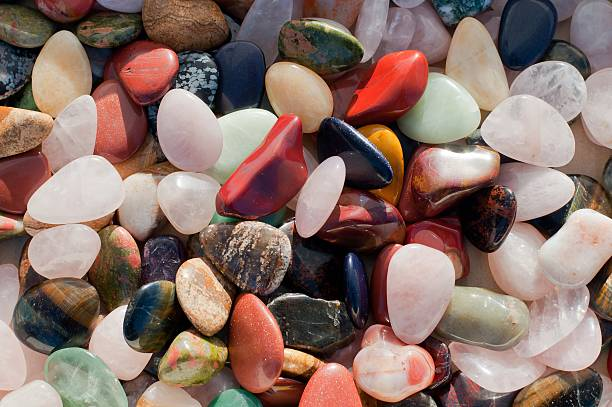

Princeton Junction New Jersey
info@lindahardware.pro
Princeton Junction New Jersey
info@lindahardware.pro

Transform your Princeton Junction New Jersey outdoor space with premium pea gravel. Whether for decorative features or functional ground cover, enjoy long-lasting results and affordable landscaping solutions.
Click Here To Call Us (877) 848-1711When it comes to creating beautiful and durable outdoor spaces, our Pea Gravel services in Princeton Junction New Jersey are the top choice for homeowners and businesses alike. Known for its versatility and natural aesthetic, pea gravel is the perfect solution for a range of landscaping and construction projects. Whether you're working on a driveway, pathway, garden bed, or drainage system, our high-quality pea gravel offers an eco-friendly and cost-effective alternative to other landscaping materials.
Our pea gravel is sourced from the best quarries to ensure it is clean, consistent, and easy to work with. We provide a wide variety of colors and sizes to match your unique design needs. Pea gravel’s rounded texture allows for excellent drainage, making it a popular choice for areas prone to water runoff or heavy rainfall in Princeton Junction New Jersey .
Not only is pea gravel an attractive option, but it's also low-maintenance. It’s resistant to weed growth and can be easily replenished to maintain its appearance. Our team of experts in Princeton Junction New Jersey will help you determine the ideal amount of pea gravel needed for your project and ensure it’s installed properly for long-lasting results.
For the best pea gravel services in Princeton Junction New Jersey choose us for reliable, professional, and affordable solutions. Contact us today for a free consultation and get started on transforming your outdoor space with high-quality pea gravel!
Residential & commercial Pea Gravel
Quality services at affordable prices
Immediate 24/ 7 emergency services


Pea gravel is an excellent choice for landscaping in Princeton Junction New Jersey offering both functional and aesthetic benefits that align with the region's unique climate. Miami’s hot, humid environment can challenge traditional landscaping materials, but pea gravel stands out due to its durability and versatility.
One of the main advantages of pea gravel in Princeton Junction New Jersey is its heat resistance. Miami's scorching summers and intense sunlight can cause some landscaping materials to crack, fade, or deteriorate. Pea gravel, however, remains intact and vibrant under harsh weather conditions, making it a long-lasting option for your outdoor spaces. Its small, smooth stones provide excellent drainage, which is especially important in Princeton Junction New Jersey where heavy rains and humidity are frequent. This drainage helps prevent waterlogging and erosion, ensuring that your landscaping stays intact and healthy year-round.
Additionally, pea gravel offers a low-maintenance solution. Its natural composition means it doesn’t require frequent upkeep like grass or mulch. Simply adding a fresh layer of pea gravel every few years can keep your landscaping looking new and pristine. It’s also highly customizable, with a variety of colors and textures that can complement any design, from contemporary patios to rustic garden paths.
Whether you're creating a driveway, garden bed, or decorative pathway in Princeton Junction New Jersey pea gravel’s adaptability to different landscapes and climates makes it a top choice for homeowners seeking both beauty and practicality.
Residential & commercial Pea Gravel
Quality services at affordable prices
Immediate 24/ 7 emergency services
Effective drainage is key to maintaining the integrity and usability of any commercial property. Pea gravel offers an excellent solution for commercial drainage issues, allowing water to flow freely while preventing erosion and flooding problems.
At Pea Gravel, we design comprehensive drainage systems and solutions utilizing pea gravel tailored to commercial properties . Our expertise ensures that your business remains functional and accessible, no matter the weather conditions. We take into account the specific drainage needs of your property to create the most efficient solution.
Pea gravel provides a porous and aesthetically pleasing surface that promotes better drainage without compromising on the visual appeal of your property. Our innovative drainage designs can handle heavy rains while enhancing your property’s look, ensuring you attract customers regardless of weather challenges. Select us for top-quality commercial drainage solutions focusing on durability and efficiency with pea gravel applications.

Creating stunning garden displays requires attention to detail and quality components. Pea gravel is an exceptional choice for showcasing plants, artwork, or features while enhancing aesthetics and providing excellent drainage.
In Princeton Junction New Jersey our team specializes in designing captivating garden displays utilizing pea gravel as a foundational material. The natural look of pea gravel complements various plants and decorative elements, allowing your exhibits to shine.
Our commitment to quality ensures that we provide only the best materials that will stand the test of time, whether you are showcasing a seasonal display or a permanent art installation. Choose us to transform your garden into a stunning visual experience.

Erosion can threaten the integrity of your commercial property, but pea gravel can be an effective method for mitigating its effects. By using pea gravel to stabilize soil and redirect water flow, businesses can protect their landscapes from erosion while enhancing aesthetics.
, we specialize in providing erosion control solutions that integrate beautifully into commercial landscapes. Our expert team will analyze your property’s needs and offer tailored strategies using our premium pea gravel to combat erosion effectively.
By choosing us, you invest in an eco-friendly, sustainable solution designed to protect your property while enhancing its overall look. Our mission is to provide quality services that safeguard your investment for years to come.

Efficient drainage systems are crucial for property sustainability, and pea gravel plays an important role in their effectiveness. Its structure opens pores for water movement, preventing pooling and encouraging expedited drainage in various settings.
In Princeton Junction New Jersey we design and install pea gravel drainage systems tailored to your land's specific needs, whether they are simple or complex. Integrating the right gravel can mitigate issues related to water management and soil integrity while enhancing the overall landscape.
Choosing us means you partner with experts who understand the essential dynamics of drainage. We are dedicated to creating solutions that foster sustainability, ensuring your property benefits from optimal drainage performance.

Adding ponds and water features to your landscape can create a tranquil and appealing environment. Pea gravel serves as an excellent choice for ponds, providing a natural-looking option that enhances the aesthetic while improving functionality.
Using pea gravel in water features or around ponds can help stabilize soil, promote drainage, and create a clean, inviting atmosphere. our team specializes in designing water features that blend seamlessly with your landscaping while focusing on the benefits of using grape gravel.
When you choose us, you’re partnering with experts dedicated to creating beautiful, functional outdoor environments. We ensure all aspects of your pond or water feature installation reflect your vision while offering long-lasting quality.
For those looking to install artificial turf, using pea gravel as infill can enhance the functionality and appearance of your landscape. This innovative approach increases drainage capabilities while providing a natural look and feel underfoot.
In Princeton Junction New Jersey pea gravel infill is beneficial for promoting airflow and moisture retention while maintaining the turf’s stability. It minimizes maintenance while keeping your landscape looking fresh and inviting throughout the seasons.
Choosing us for your artificial turf project means benefiting from our comprehensive knowledge of landscaping materials. We are dedicated to ensuring that your artificial turf serves its purpose while enhancing the overall beauty of your outdoor living space.

Maintaining clean lines and structure in landscaping is essential for enhancing a property's appeal. Pea gravel can be an effective material for driveway edging, providing a neat and elegant boundary that improves the overall appearance of your driveway.
At Pea Gravel, we specialize in creating beautiful driveway edging solutions utilizing the natural beauty of pea gravel to define space without compromising on functionality. Our experienced team understands how to enhance existing driveways with appropriate materials, ensuring that your property stands out.
Pea gravel edging not only looks great, enhancing curb appeal, but also aids in controlling weeds and maintaining soil between your driveway and surrounding landscape. It's low-maintenance and easy to install, making it the perfect choice for both homeowners and commercial property owners. Select us for quality driveway edging solutions using attractive pea gravel .

Using the right aggregates in concrete mixes is crucial for creating durable and resilient surfaces. Pea gravel serves as a popular aggregate choice, providing strength and stability while achieving a desirable finish in various concrete applications.
At Pea Gravel, we offer high-quality pea gravel specifically designed for use in concrete mixes in Princeton Junction New Jersey . Our team understands the unique properties of aggregate materials, ensuring you achieve the best results whether pouring new driveways, sidewalks, or slabs.
Using pea gravel as aggregate allows for a smooth finish with notable durability, supporting significant weight and resisting cracking over time. Our experts offer guidance on the appropriate ratios and methods for incorporating pea gravel into your concrete mixes, ensuring efficient use tailored to your specific needs. Engage us for top-quality concrete solutions that leverage the versatility of pea gravel .
Years Experience
Expert Technicians
Satisfied Clients
Compleate Projects
At Linda Hardware, we are your trusted partner for high-quality pea gravel across Princeton Junction New Jersey . Whether you're working on landscaping, construction, or drainage projects, we provide reliable and affordable solutions that stand out from the competition. Our pea gravel is sourced from the best quarries, ensuring durability, versatility, and consistent quality for all your needs.
Why settle for less when you can have top-notch pea gravel that enhances the aesthetic appeal of your landscape while offering practical benefits like erosion control and excellent drainage? Our pea gravel is perfect for pathways, driveways, garden beds, and more. It's easy to install and maintain, making it a favorite among DIY enthusiasts and professional landscapers alike.
Linda Hardware is dedicated to providing unmatched customer service. We offer fast delivery throughout Princeton Junction New Jersey ensuring your project stays on track. Our team is always available to offer expert advice, helping you choose the right size and type of pea gravel for your specific requirements. We understand the importance of timely, reliable service, and we work tirelessly to ensure complete satisfaction.
When you choose Linda Hardware, you're not just buying pea gravel — you're investing in a long-term relationship with a company that values quality, service, and your success. Let us help you achieve your project goals with the best pea gravel in Princeton Junction New Jersey . Contact us today and experience the Linda Hardware difference!
In today's world, ensuring your driveway is not only functional but also visually appealing is paramount. Pea gravel for driveways offers an affordable, durable, and attractive solution for homeowners . Not only does it provide excellent drainage, preventing water pooling, but it also adds a rustic charm that enhances your property's curb appeal. The smooth, rounded stones come in a variety of colors and sizes, allowing you to customize your driveway to suit your style.
Choosing us means opting for quality. Our pea gravel is sourced from the finest suppliers, ensuring consistency and resilience in all weather conditions. Our installation team is experienced and uses best practices to create a stable base and effective drainage system. Why settle for ordinary when you can have extraordinary? Let us help you create a stunning driveway that welcomes you home every day.
Landscaping can be a transformative experience for any property owner, and incorporating pea gravel can elevate your outdoor space to new heights. Pea gravel offers endless possibilities for landscaping designs ranging from minimalist zen gardens to intricate stone pathways. The versatility of pea gravel allows it to complement a variety of plants and outdoor features, enhancing the overall look of your garden.
, consider using pea gravel in flower beds, around trees, or as a decorative border for your landscaping. It's an excellent choice for creating pathways that guide guests through your garden, as it provides a stable and soft walking surface that won’t compact over time. One popular idea is combining pea gravel with larger stones for a beautifully layered texture that’s eye-catching and functional.
Our team has a wealth of experience in landscape design, helping you select the right type and color of pea gravel to suit your vision. We are committed to turning your ideas into reality, utilizing our extensive experience in the industry to ensure you love your outdoor space for years to come.
Creating walkways or pathways in your yard can dramatically change the functionality and accessibility of your outdoor space. Pea gravel walkways offer an inviting, natural look while providing excellent drainage. Walkways made from pea gravel are easy to maintain, and their permeable nature ensures that rainwater seeps efficiently into the ground, promoting healthy soil and plants.
Custom pathways can also tie together different sections of your garden or yard, enhancing connectivity and aesthetic flow. When you choose us to design and install your pea gravel pathways, you’re selecting a partner with decades of experience in landscaping solutions in Princeton Junction New Jersey .
Our commitment to quality is unmatched. We utilize only the top-grade pea gravel available to ensure your walkway lasts for years. Our team pays meticulous attention to detail, crafting paths that are not only functional but also harmoniously integrate with your landscape. Enjoy a stunning walkway that reflects your personal style and enhances your outdoor living experience.
Adding pea gravel to garden beds can enhance both the beauty and ecology of your plants. Pea gravel acts as a decorative mulch, helping to retain moisture while suppressing weeds. Its natural look complements flowers, shrubs, and other plants, providing a neat, organized appearance to your garden.
As experts in landscaping we understand the specific needs of garden beds in our region. Our pea gravel is locally sourced and specifically curated for optimal drainage and compatibility with various plants. Secure your outdoor oasis with our top-quality material designed to thrive in Princeton Junction New Jersey 's unique climate.
Additionally, our knowledgeable team is here to assist you in selecting the right pea gravel size and color to match your specific garden aesthetic. When you partner with us, you’re investing in a thriving, sustainable garden bed that enhances your landscape while providing a beautiful backdrop for all your outdoor activities.
Creating an inviting patio area can significantly enhance your outdoor living space. Pea gravel is an excellent choice for patios due to its versatility, ease of installation, and elegant appearance. At Pea Gravel, we offer high-quality pea gravel options that will transform your patio into a beautiful and functional outdoor retreat.
Imagine spending warm evenings on your new pea gravel patio, surrounded by the soothing sounds of nature. The smooth stones provide a comfortable surface underfoot, and their natural variations allow you to create unique designs that reflect your personal style. Our team is skilled in designing patio layouts that maximize space and enhance the overall aesthetics of your outdoor area.
In addition to beauty, pea gravel patios are practical. They provide excellent drainage, allowing rainwater to permeate the surface, which reduces the risk of pooling and provides a more comfortable outdoor experience. Whether you want a small, intimate setting or a larger entertaining area, the versatility of pea gravel makes it an ideal choice.
Choosing Pea Gravel for your pea gravel patio means you are selecting a team dedicated to quality and customer satisfaction. We take pride in transforming your patio dreams into reality, ensuring your outdoor space is both functional and fabulous in Princeton Junction New Jersey .
Safety is paramount when it comes to designing playground areas, and pea gravel is an ideal solution. It provides a soft surface that can cushion falls, reducing the risk of injury. Our premium-grade pea gravel is certified safe for use in playgrounds, making it a reliable choice for homeowners, schools, and parks .
The natural drainage and permeability of pea gravel help keep playgrounds dry, reducing mud and accumulations of water that can contribute to unsafe conditions. It also offers a non-slip surface that encourages active play.
When you choose us for your playground surface needs, you’re selecting a company with expertise in safety and quality. We understand the needs of families and communities and strive to provide an installation that meets or exceeds safety standards while creating a fun and engaging environment for children.
When it comes to creating a designated pet area or dog run, functionality and comfort are key. Pea gravel is the perfect solution, offering a soft surface that is gentle on paws while being easy to clean and maintain. At Pea Gravel, we understand the needs of pet owners and specialize in creating dog runs that prioritize both safety and aesthetics.
A pea gravel surface provides excellent drainage, keeping your pet area dry and minimizing mud during rainy weather. Its natural properties also discourage weed growth and allow for easy clean-up of waste, making maintenance a breeze. The rounded stones are comfortable for pets to walk on, providing them with a safe space to exercise and play.
Moreover, pea gravel is a cost-effective solution, ensuring that your dog run can be set up quickly without compromising quality. Our experienced team at Pea Gravel works closely with you to design a pet area that meets your specific needs, from size to layout and aesthetics. We’ll ensure your dog run harmonizes beautifully with your landscape while providing a practical space for your furry friends to explore.
Your pets deserve the best, and with our pea gravel solutions, they’ll have a safe and inviting area in Princeton Junction New Jersey to call their own.
Flower beds can greatly benefit from the addition of pea gravel as a ground cover. Not only does it look visually appealing, but it also helps with moisture retention and weed prevention. Using pea gravel in flower beds enhances drainage around your plants, allowing their roots to breathe and flourish in healthy soil.
In Princeton Junction New Jersey we understand the challenges of gardening in our climate, and our pea gravel is chosen for its perfect compatibility with a variety of flowering plants. Our skilled personnel can guide you in selecting the right colors and sizes to integrate seamlessly with your garden's colors and designs.
Additionally, placing pea gravel around your flowers makes garden maintenance easier by allowing for a clean and organized look. Our team is committed to providing you with an exceptional service experience, delivering beautiful and functional flower beds that enhance your home’s landscaping.
Creating a rock garden can be a rewarding experience, bringing together different textures and colors in a cohesive design. Pea gravel is ideal for rock gardens, offering a blend of natural beauty and practicality. This versatile material, can highlight your focal stones while providing a soft contrast that allows plants to shine.
Using pea gravel in your rock garden can help improve drainage and prevent soil erosion, which are crucial aspects of maintaining healthy plants. Furthermore, its lightweight nature allows easy rearrangement of elements for those who like to change their landscape designs frequently.
When you partner with us, you're working with a team skilled in creating harmonious outdoor spaces. We provide a range of pea gravel options to suit your rock garden design, ensuring that every detail resonates with your vision for your garden.
As water conservation becomes increasingly important, xeriscaping provides an excellent way to create beautiful landscapes that reduce water usage. Pea gravel is an ideal material for xeriscaping, facilitating drainage and providing a versatile ground cover that complements drought-resistant plants. homeowners can achieve a stunning landscape design while being responsible stewards of the environment.
Choosing pea gravel for your xeriscape means you'll enjoy low-maintenance beauty year-round. It helps stabilize the soil and prevents weed growth while allowing you to focus on developing a landscape that thrives with minimal irrigation.
Our team is dedicated to assisting you in creating a xeriscape that meets your aesthetic desires and sustainability goals. We provide consultation and implementation services that highlight the beauty of your outdoor space while effectively conserving water.
Making a lasting first impression starts with your business's parking lot. Using pea gravel for parking lots presents an attractive, eco-friendly alternative to traditional asphalt or concrete, creating a positive environment for employees and customers alike.
Pea gravel allows excellent drainage, which can reduce the risk of flooding and standing water, ultimately extending the lifespan of your parking lot surface. Our experience ensures that we understand local regulations and best practices to create a durable, functional, and visually appealing parking area that meets your needs.
Choosing us means you’ll receive exceptional service and high-quality materials. Our team is dedicated to delivering safety, durability, and aesthetics, making sure your parking lot enhances your business's overall appeal.
Outdoor events require properly designed spaces that enhance the experience while providing practical solutions for guests and organizers. Pea gravel can be an ideal choice for outdoor event spaces, creating a unique aesthetic and practical surface that encourages gathering and interaction.
At Pea Gravel, we specialize in designing outdoor event spaces that offer functionality and elegance through the use of pea gravel. It provides a solid surface that promotes comfort for guests while allowing for proper water drainage beneath, ensuring a dry and pleasant atmosphere, irrespective of the weather.
Furthermore, pea gravel can be utilized to create defined areas for seating, dining, or activities, enhancing the overall flow of your event. Whether you are hosting weddings, corporate events, or community gatherings, our team works closely with you to design and implement a beautiful outdoor space that clients and attendees will remember. Choose us for impeccable outdoor event spaces enhanced by pea gravel in Princeton Junction New Jersey .
Creating effective and attractive commercial pathways is crucial for any business environment. Pea gravel pathways provide not only a charming aesthetic but also a practical solution for directing traffic through your property. Its brilliance lies in its organic texture and the ease of installation.
At Pea Gravel, we understand the unique needs of businesses in creating pathways in Princeton Junction New Jersey . Our team is experienced in installing pea gravel pathways that balance functionality and beauty, ensuring smooth navigation through commercial spaces while maintaining a professional image.
Pea gravel offers effective drainage, reducing water pooling and mud accumulation that can deter customers from visiting. Additionally, its low-maintenance nature ensures you won’t frequently worry about upkeep, thereby allowing your staff to focus on running your business. When seeking expert installers for commercial pathways, we guarantee a seamless and attractive solution using quality pea gravel.
Business courtyards often serve as inviting spaces for employees and clients, making their design crucial. Pea gravel is an innovative material for business courtyards, offering a blend of style and function. It allows for varied landscaping options, making the area appealing while promoting an inviting atmosphere for gatherings.
At Pea Gravel, we specialize in creating and installing pea gravel courtyards that enhance the overall business environment. Understanding the importance of aesthetics and functionality, our team brings creative ideas to life through the effective use of pea gravel in courtyard designs.
Not only does pea gravel provide a visually appealing surface, but it also promotes drainage and reduces mud problems, ensuring that your outdoor spaces are both beautiful and accessible year-round. Whether you want to incorporate seating areas, decorative flower beds, or winding walkways, we bring expertise and precision to every project, enhancing your business’s appeal .
First impressions are key in the retail world, and that starts from your storefront’s landscaping. Pea gravel is a brilliant choice that enhances visual interest, enables proper drainage, and creates inviting environments that encourage customers to enter.
At Pea Gravel, we understand the significance of high-quality landscaping for retail spaces . We offer custom solutions utilizing pea gravel, turning dull, lifeless storefronts into vibrant, appealing entrances that stand out in the crowded retail market.
Pea gravel allows for beautiful flower beds, defined pathways, and creative arrangements that catch the eye of passersby. Additionally, it provides excellent drainage, preventing water accumulation that could deter customers during wet seasons. Our experienced landscaping teams collaborate closely with store owners to understand their vision and execute it precisely. Choose us for unparalleled storefront landscaping solutions that leverage the beauty and practicality of pea gravel in Princeton Junction New Jersey .
Hotels and resorts rely on exceptional landscaping to create a serene and inviting environment for guests. Pea gravel offers a natural, elegant solution for various applications, from pathways to garden features, enhancing your property’s aesthetic appeal and functionality.
In Princeton Junction New Jersey we specialize in designing beautiful landscapes for the hospitality industry. Our pea gravel can help create relaxing pathways, outdoor lounges, or scenic seating areas that encourage guests to explore and unwind in nature.
By choosing us, you’ll benefit from our extensive experience in creating stunning landscapes tailored to your hotel or resort’s unique theme and atmosphere. Our commitment to quality ensures your landscaping will withstand the test of time, providing a beautiful environment for guests year after year.
Public parks and playgrounds need durable, safe surfaces that encourage community interaction. Pea gravel is a perfect solution, providing a natural look while ensuring excellent drainage and safety for children.
Our team can help design and install pea gravel surfaces that meet safety standards for playgrounds, ensuring children can play freely while parents can relax. Using pea gravel in public parks also encourages environmental responsibility with its sustainable attributes.
Our commitment to quality materials and expert installations means that your public spaces will be inviting and functional for years to come. Trust us to create safe, beautiful environments where families can create lasting memories together.
Pea gravel is an affordable and versatile landscaping material that can significantly enhance the aesthetic and functionality of your Princeton Junction New Jersey property. Whether you're creating a beautiful garden path, driveway, or decorative element, pea gravel offers numerous benefits that make it a popular choice for homeowners in Princeton Junction New Jersey .
Durability and Low Maintenance
One of the standout features of pea gravel is its durability. Unlike other materials, it doesn't crack or fade over time, making it an excellent choice for high-traffic areas. Pea gravel also requires minimal maintenance—regular raking and occasional topping off are all it takes to keep your Princeton Junction New Jersey property looking fresh.
Eco-Friendly and Drainage-Friendly
Pea gravel is an environmentally friendly option, as it is made from natural stones, which are often sourced locally. Additionally, it provides excellent drainage. Its small, smooth stones allow water to flow easily through, reducing the risk of puddling and erosion on your Princeton Junction New Jersey property. This makes it perfect for areas prone to heavy rainfall or flooding.
Aesthetic Appeal and Versatility
Pea gravel adds a natural beauty to any outdoor space with its smooth texture and variety of colors. It can be used for everything from decorative rock gardens to functional driveways, walkways, and patios. Whether you want a rustic, modern, or contemporary look, pea gravel can complement any style, making it a highly versatile choice for your Princeton Junction New Jersey property.
Choosing pea gravel for your Princeton Junction New Jersey property is a smart investment that brings both beauty and practicality to your landscape.
Princeton Junction is an unincorporated community and census-designated place (CDP) located within West Windsor, in Mercer County, in the U.S. state of New Jersey. As of the 2010 United States Census, the CDP's population was 2,465.
To prevent erosion, use edging to contain the gravel and ensure a solid base. Additionally, ensure the area has proper slope and drainage to avoid displacement.
Pea gravel is smaller, smoother, and more visually appealing than other gravel types, making it the best choice for areas where aesthetics and comfort matter, such as pathways or decorative features .
The amount of pea gravel you need depends on the area you're covering. Linda Hardware provides a gravel calculator to help estimate how much you'll need based on your garden's dimensions.
Linda Hardware offers high-quality pea gravel at competitive prices, with reliable delivery and expert advice to help you choose the right material for your project in Princeton Junction New Jersey .
Yes, pea gravel is an excellent choice for drainage systems due to its ability to allow water to pass through easily, making it ideal for landscaping and foundation drainage .
Yes, pea gravel is pet-friendly and a great choice for creating safe and comfortable outdoor spaces for pets in Princeton Junction New Jersey as it is soft and non-toxic.
To level pea gravel, use a rake to spread the gravel evenly, and then compact it using a mechanical compactor. This ensures a smooth and even surface for your project .
Regularly rake the gravel to keep it level, and replace any gravel that gets displaced. Additionally, washing pea gravel annually helps to maintain its appearance.
Yes, pea gravel is an excellent choice for driveways because it's easy to maintain, provides a natural look, and allows for proper drainage, preventing puddles.
Yes, pea gravel is a sustainable option as it is natural and durable. It doesn’t require frequent replacement, reducing waste, and it provides good drainage to prevent erosion.
Pea gravel is an ideal material for water features such as ponds, fountains, or dry creek beds, as it helps with drainage and creates a natural aesthetic in Princeton Junction New Jersey .
To clean pea gravel, simply use a garden hose to wash off dirt and debris. For deeper cleaning, you can occasionally replace the gravel or wash it with a pressure washer.
Yes, pea gravel can be mixed with other materials like sand or crushed stone to achieve the desired texture and appearance for your project .
Absolutely! Pea gravel is perfect for creating a beautiful, low-maintenance patio offering a natural, rustic look while allowing water to drain easily.
Pea gravel is suitable for driveways with moderate traffic. However, for heavy traffic areas, consider adding a stabilizer or combining pea gravel with other types of gravel for better durability .
Pea gravel is a small, rounded, smooth stone commonly used in landscaping for paths, driveways, and garden beds. It's versatile, aesthetically pleasing, and drains well, making it ideal for various outdoor projects.
Pea gravel creates a smooth, comfortable surface for walking, provides excellent drainage, and adds a natural aesthetic to pathways in Princeton Junction New Jersey making it ideal for high-traffic areas.
Pea gravel is highly durable and can last for many years with minimal maintenance, making it an excellent long-term investment for landscaping projects .
Yes, Linda Hardware offers delivery services for pea gravel directly to your location . Contact us to schedule a delivery at your convenience.
To install pea gravel, start by leveling the ground, then lay down a weed barrier before spreading the gravel evenly. Linda Hardware can offer guidance or connect you with local professionals for installation.
Yes, pea gravel is a great, soft surface for playgrounds, providing a cushioned landing for children. Just ensure the depth is sufficient to provide safety .
Pea gravel does not attract pests and is a great choice for pest-free landscaping in Princeton Junction New Jersey . It also allows water to drain properly, reducing standing water that could attract mosquitoes.
You can order pea gravel from Linda Hardware online through our website, or by calling our customer service team for assistance with ordering and delivery to your Princeton Junction New Jersey location.
To prevent weeds, install a weed barrier fabric beneath the gravel and maintain a layer of pea gravel at least 2-3 inches thick for optimal results.
Yes, pea gravel is suitable for slopes in Princeton Junction New Jersey especially when used with proper edging to prevent displacement. Its drainage qualities make it a great choice for sloped areas.
Pea gravel typically ranges from 3/8 to 3/4 inch in diameter. It is smaller, rounder, and smoother than other types of gravel, making it ideal for decorative landscaping .
Pea gravel is available in a variety of colors, from natural tones like brown and beige to more vibrant hues. Linda Hardware offers several color options for your landscaping needs in Princeton Junction New Jersey .
Yes, pea gravel helps with erosion control by promoting water drainage and preventing soil erosion on slopes and hills .
The cost of pea gravel varies depending on the quantity and delivery distance. Contact Linda Hardware for a customized quote based on your needs .
Yes, pea gravel can withstand freezing temperatures. However, it's important to ensure proper compaction and drainage to prevent shifting and freezing problems in Princeton Junction New Jersey .
"I had a great experience with Linda Hardware. Their pea gravel is top quality and perfect for my backyard project in Princeton Junction New Jersey . The team was professional, and the delivery was seamless. I highly recommend them for anyone needing landscaping supplies."
Profession
"Linda Hardware provided top-notch pea gravel for my driveway project in Princeton Junction New Jersey . The gravel is high quality, and the delivery was on time. I’m thrilled with the results and would recommend Linda Hardware to anyone needing reliable landscaping supplies."
Profession
"I recently ordered pea gravel from Linda Hardware for my garden paths in Princeton Junction New Jersey . The quality was excellent, and the price was fair. The team at Linda Hardware made the whole process easy, from ordering to delivery. Highly recommend their services!"
Profession
Princeton Junction NJ Pea Gravel Pros
(877) 848-1711
info@lindahardware.pro
09.00 AM - 09.00 PM
09.00 AM - 12.00 PM